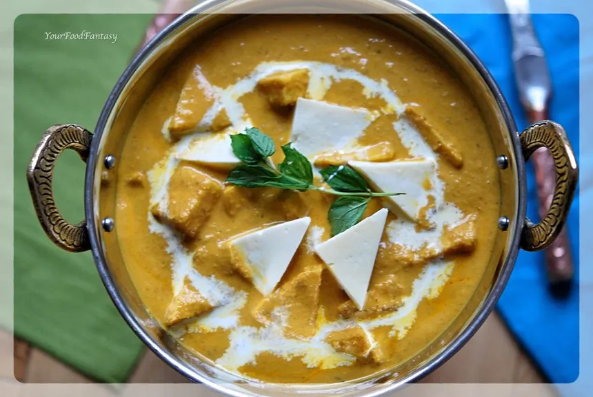

Shahi Panner Recipe

Recipe
Key Ingredients
Paneer: 450g (cut into cubes or triangles)
Onions & Tomatoes: 2 medium onions (blanched and pureed), 4 tomatoes (wedges)
Nuts & Dry Fruits: 10 cashews, 10 almonds (skins removed), optionally dried mango/apricot
Whole Spices: Cinnamon stick, green cardamom, black cardamom, cloves, fennel seeds, cumin seeds, bay leaf
Spices: Kashmiri chili powder, turmeric, garam masala, ground cardamom, red chili powder
Cream & Dairy: 80 ml cream, 1/3 cup curd (yogurt), milk (optional)
Garnish: Fresh coriander, kasoori methi (dried fenugreek leaves), saffron strands, cream
Basic Steps (Based on Restaurant-Style Recipe)
Prepare the Base: Sauté whole spices in ghee, then add onions, ginger, garlic, tomatoes, and nuts. Cook until soft, cool, then blend into a smooth paste.
Strain & Cook Gravy: Pass the paste through a sieve. Return to pan, add water, salt, and spices. Simmer until thickened.
Add Paneer: Gently fold in paneer cubes and cook on low heat for 2–3 minutes.
Finish: Stir in cream, kasoori methi, and ground cardamom. Adjust seasoning and serve hot.
Garnish: Top with fresh cream, chopped coriander, saffron, and dried rose petals for a royal touch.
Tips
Soak paneer in hot water for 15–20 minutes before use to soften.
Use Kashmiri chili powder for vibrant red color and mild heat.
For a richer taste, temper yogurt before adding to the gravy to prevent curdling.
Serve with naan, paratha, or basmati rice
Home